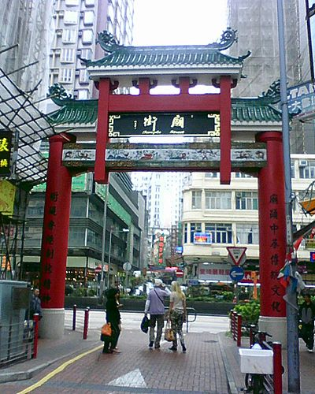
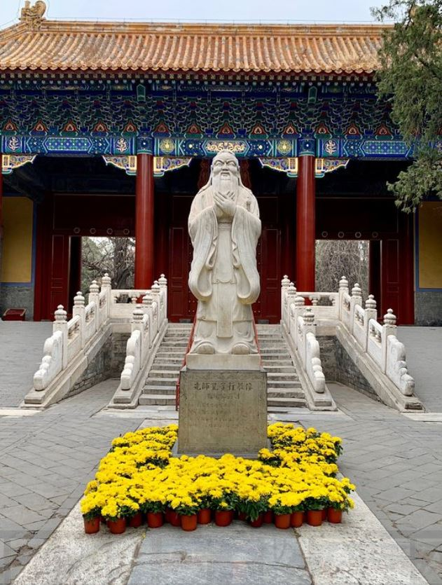
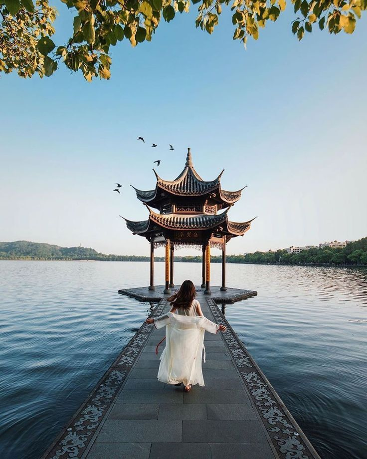

An ever-growing skyline, cutting-edge art galleries and a gourmet food and drink scene draw travellers into Shanghai‘s orbit.
And the city is home to some of the most sophisticated stays in China.

Hong Kong
By Culture Trip
As one of the most visited cities in the world, Hong Kong has hospitality in its lifeblood. What the vertical buildings lack in floorspace,
they make up for with innovative design and a setting of skylines.

Beijing
By Culture Trip
From the cavernous Forbidden City to the soaring Temple of Heaven,
the greenery-cloaked Summer Palace to imposing Tiananmen Square, Beijing is a sightseer’s paradise with historic draws aplenty.

Hangzhou
By Culture Trip
Hangzhou, commonly described by people as ‘heaven on earth’, is one of the most beautiful cities in China,
with a lot of great natural scenic spots as well as some awesome old-style architecture.